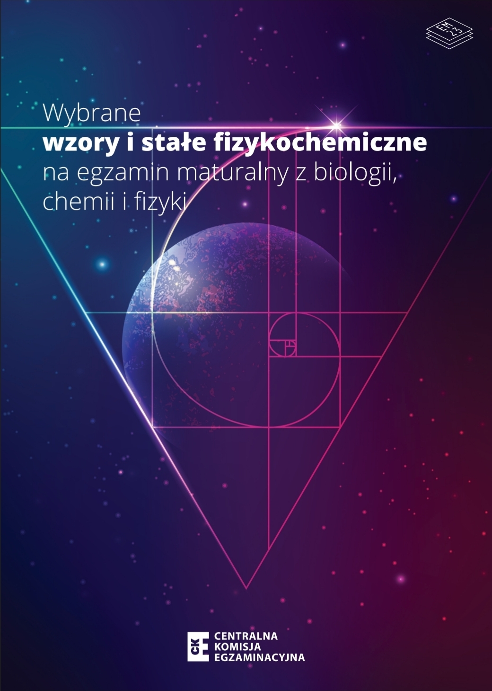

To opracowanie edukacyjne „KARTA WZORÓW i wielkości fizykochemicznych” zostało przygotowane przez Annę Wójcik-Jedlińską.
Materiał jest inspirowany zakresem kart wzorów do egzaminu maturalnego publikowanych przez Centralną Komisję Egzaminacyjną (CKE) .
Układ, forma prezentacji oraz sposób dostosowania treści do urządzeń mobilnych zostały opracowane samodzielnie. Materiał ma charakter pomocniczy i edukacyjny.
Niniejszy materiał nie stanowi oficjalnego dokumentu CKE i nie zastępuje oryginalnych kart wzorów publikowanych przez CKE.
O ile nie wskazano inaczej, autorskie elementy tego opracowania są udostępniane na licencji Creative Commons Uznanie autorstwa 4.0 Międzynarodowe (CC BY 4.0) .
Licencja ta dotyczy wyłącznie elementów przygotowanych przez autora opracowania i nie obejmuje materiałów źródłowych CKE ani innych treści, do których prawa przysługują odrębnym podmiotom.